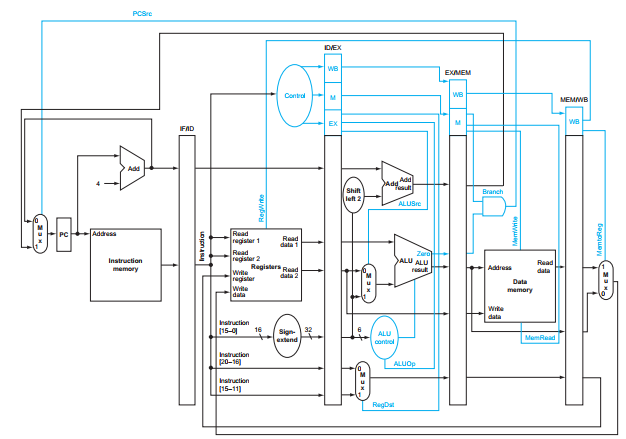
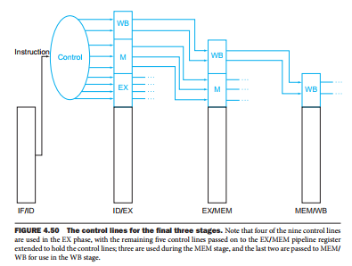

Design and Implementation of the 5 stage MIPS Pipeline
Author: George Bernard
# Construction

Source: Patterson et. Hennessy
### Differences
+ No Shift
+ Jump logic with branch
+ No ALU control
+ Add bypass/stall/exception in Decode
+ Add multdiv with registers and select to execute
## Fetch
+ PC
+ Adder
+ Select (MUX)
+ Instruction memory
## Decode
+ Decoder
+ Splitter
+ SOP Logic
+ Regfile
+ Front Door
+ Back door
+ Stall Control
+ Bypass Control
+ Exception Control
## Execute
+ ALU
+ Mult-Div
+ Branch Target Calculation
## Memory
+ Data Memory
+ Commit to branches/jumps
## Writeback
+ Write Select
+ Control ove
## Propogation of control
+ Control registers between every stage
+ Stalls are driven from F/D onward
+ Bypassing driven through control unit
+ In decode on a technicality

Source: Patterson et. Hennessy
## Reverse Dependencies
+ Minimize explicit dependencies backward
+ Writeback drives regfile
+ Exceptions in execute drive exception control
# Implementation
## Timing
+ Critical Path: One cycle of multdiv
+ Stalling: Register dependency with Data Memory
+ Bypassing: All other data hazards
+ Main Heuristic:
+ Minimize extending the critical path of any stage
+ Even at hardware cost
## Hardware
+ KG - Adder
+ Expensive but fast
+ 1 in Fetch, 5 in execute (Branch, ALU, MulDiv)
+ Many interstage registers minimizes rederiving logic.
## Clocking
+ Stages are normal clock
+ PC incremented every positive edge
+ Inter staged NOT clock
+ Pro:
+ Prevents metastability by dovetailing result latching
## Jump / Branch
+ Need these to be committed at the same time
+ if not then early jump could happen before branch commit